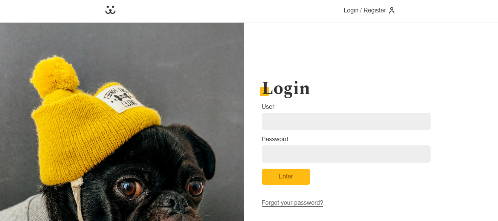

Dogs - Social Media

- React
- Vite
- React
- Router
- Context API
- CSS3
- VictoryCharts
- REST API
I am an aspiring Front-End Developer based in Paris, focused on building responsive and interactive web applications with HTML, CSS, JavaScript, and React.
I have been developing practical projects to strengthen my front-end skills, including TaskFlow, a task management app, and Dogs, a React social network project with authentication, protected routes, API integration, photo upload, comments, and user statistics.
I am currently improving my English and looking for my first professional opportunity in tech, where I can contribute to real projects, keep learning, and grow as a developer.
Before transitioning to tech, I worked in public administration in Brazil, where I developed a strong sense of responsibility, organization, attention to detail, and problem-solving.
Dogs is a social network for dogs built with React, focused on authentication, protected routes, API integration, photo publishing, comments, and user statistics.
Stacks:
TaskFlow is a simple task management app I built from scratch to practice front-end development while creating a tool to organize my daily tasks.
Stacks:
Soft Skills: